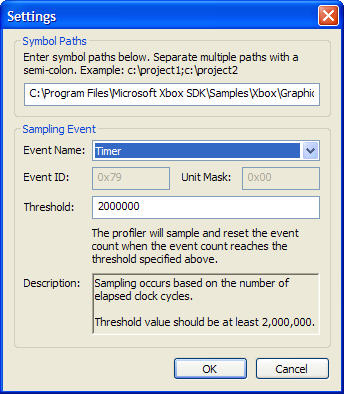

This dialog box is used to set symbol paths, the event sampled, and the frequency of the sampling.

The symbol paths are used to resolve the symbols found while profiling. Multiple paths can be separated by a semicolon. Use this field if function names are not resolving when viewing results after a profiling session.
CPX supports the sampling of two different events: Timer and Number of L2 Cache Misses.
If the Timer event is used, sampling occurs every threshold clock cycles, where threshold is the value in the Threshold text box. The value in Threshold should be 2,000,000 or greater.
If the Number of L2 Cache Misses event is used, sampling occurs periodically every threshold number of L2 data misses, where threshold is the value in the Threshold text box. The value in Threshold should be 40,960 or greater.
The L2 data cache is a memory cache on the CPU used to minimize memory reads. An L2 data cache miss occurs when the CPU requests data that is not in the L2 cache, forcing it to go to memory for the data.